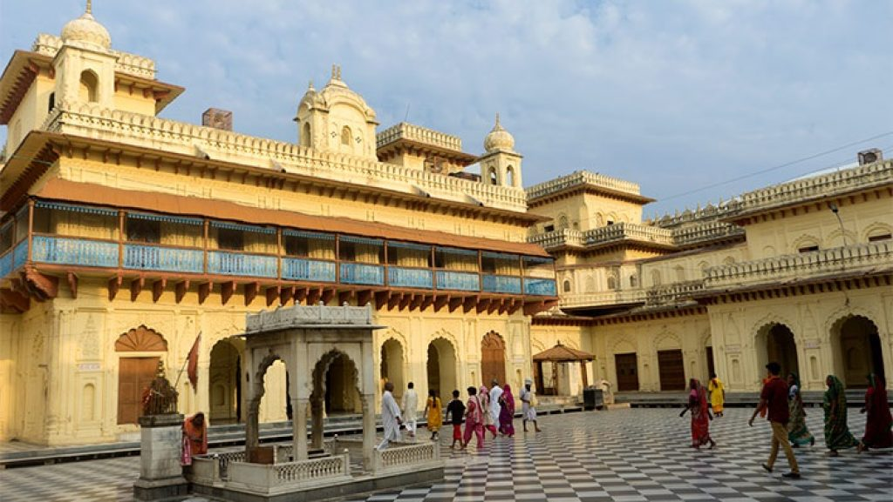
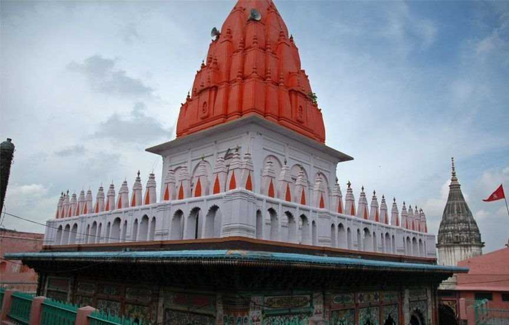
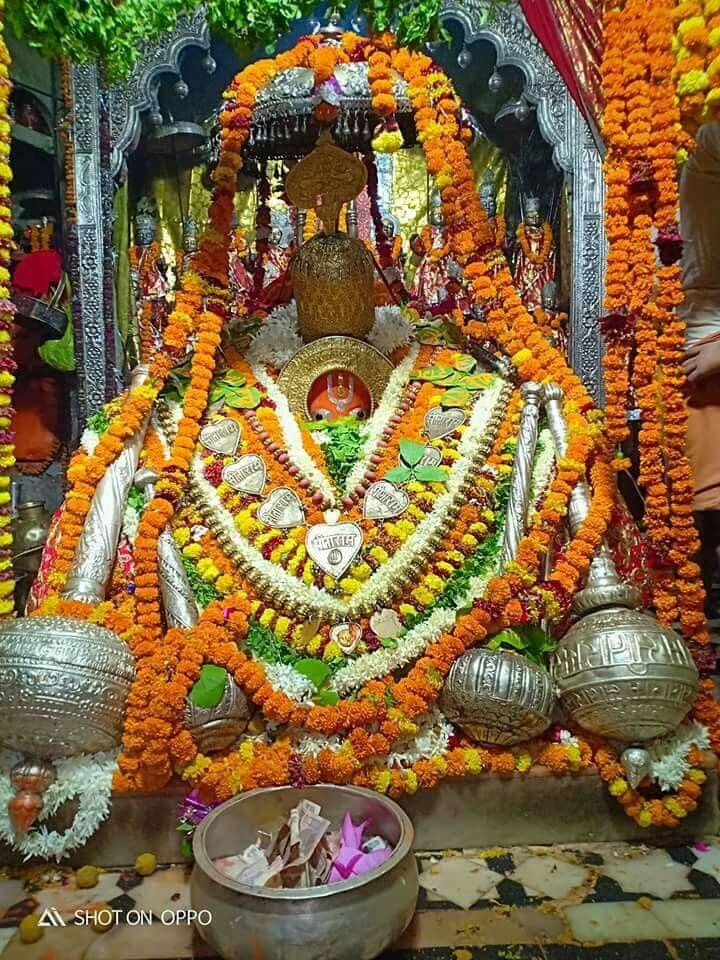
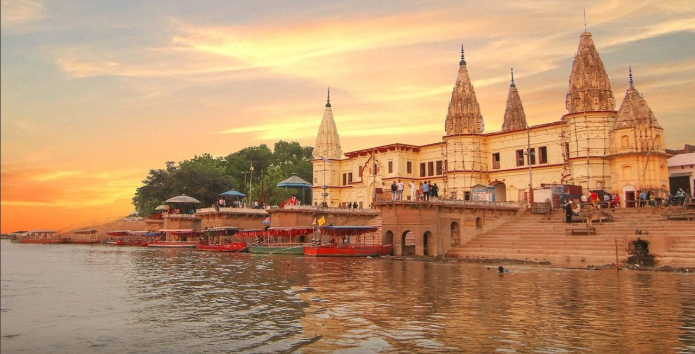

Ram Mandir is a Hindu temple that is being built in Ayodhya, Uttar Pradesh, India, at the site of Ram Janmabhoomi, the hypothesized birthplace of Rama, a principal deity of Hinduism.[6] The temple construction is being supervised by the Shri Ram Janmabhoomi Teerth Kshetra. The ground-breaking ceremony was performed on 5 August 2020 by India’s prime minister Narendra Modi.

Kanak Bhawan is to the north-east of Ram Janam Bhumi, Ramkot, in Ayodhya. Kanak Bhawan is one of the finest and famous temples in Ayodhya and is a must visit. It is believed that this Bhawan was gifted to Devi Sita by Kaikei immediately after her marriage to Lord Ram. This is private palace of Devi Sita and Lord Rama. Vikramaditya got it renovated. Later it was rebuilt/renovated by Vrish Bhanu Kunwari which exists even today. The main idols installed in the garbhgrih (sanctum), are of Lord Ram and Devi Sita.

Hanuman Garhi is a 10th century temple of lord Hanuman in Uttar Pradesh, India. Located in Ayodhya, it is one of the most important temples in the city along with other temples such as Nageshwar Nath and the in-construction Ram Temple.[1] Located in the middle of Ayodhya, 76 steps lead to the Hanumangarhi which is one of the most popular temple complexes of Hanuman in North India. It is a custom that before visiting Ram temple one should first pay visit to Lord Hanuman temple.[2][3][4] The temple houses Hanuman's mother, Anjani, with a young Hanuman sitting on her lap.[5]This temple is under the administration of Bairagi Akhara named Nirvani Ani Akhara .
 Situated on the banks of River Saryu, Guptar Ghat holds immense religious significance. According to legend, this was the place where Lord Rama had taken his last dip (jal samadhi) to leave the earth and go back to his original abode 'Vaikunta'. It is a popular belief among devotees that taking a dip in the Saryu river on this ghat will wash away their sins and relieve them from worldly worries. The ghat resounds with the chants of Lord Rama's name as devotees and priests sing hymns in his praises. Tourists can also visit Raja Mandir and Chakra Harji Vishnu Temple located near Guptar Ghat, which is lined with temples of Ram Janki, Charan Paduka, Narasingh and Lord Hanuman. The well-maintained ghats were built by Raja Darshan Singh during the first half of the 19th century.
